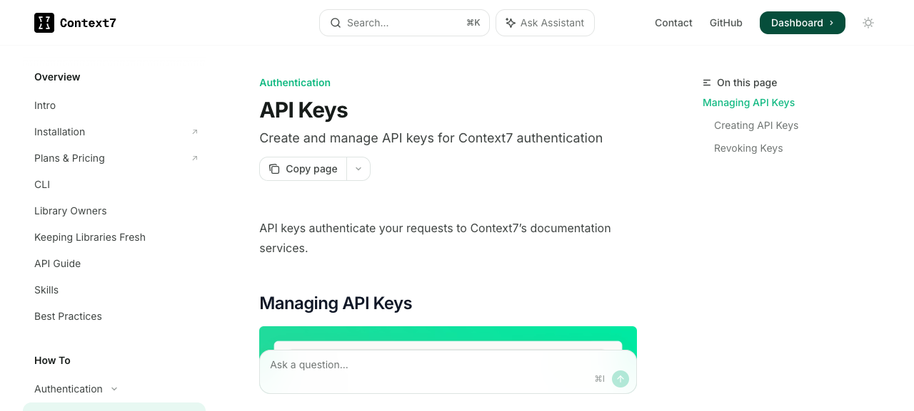
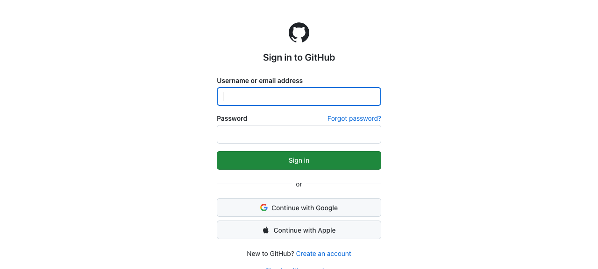
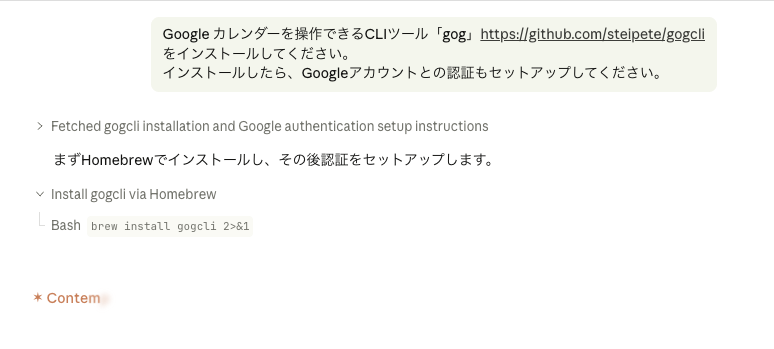
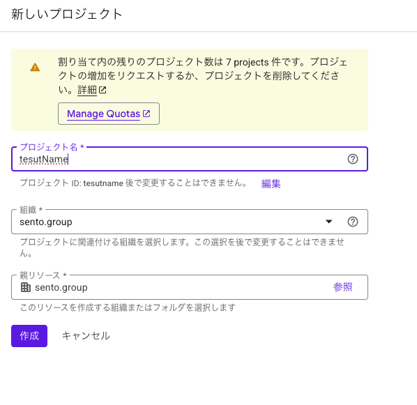
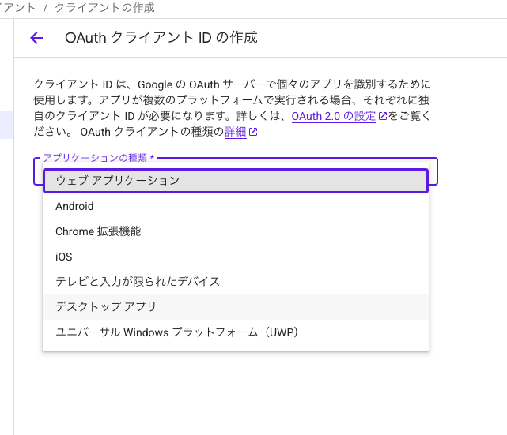
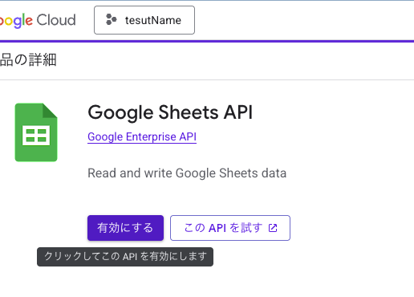
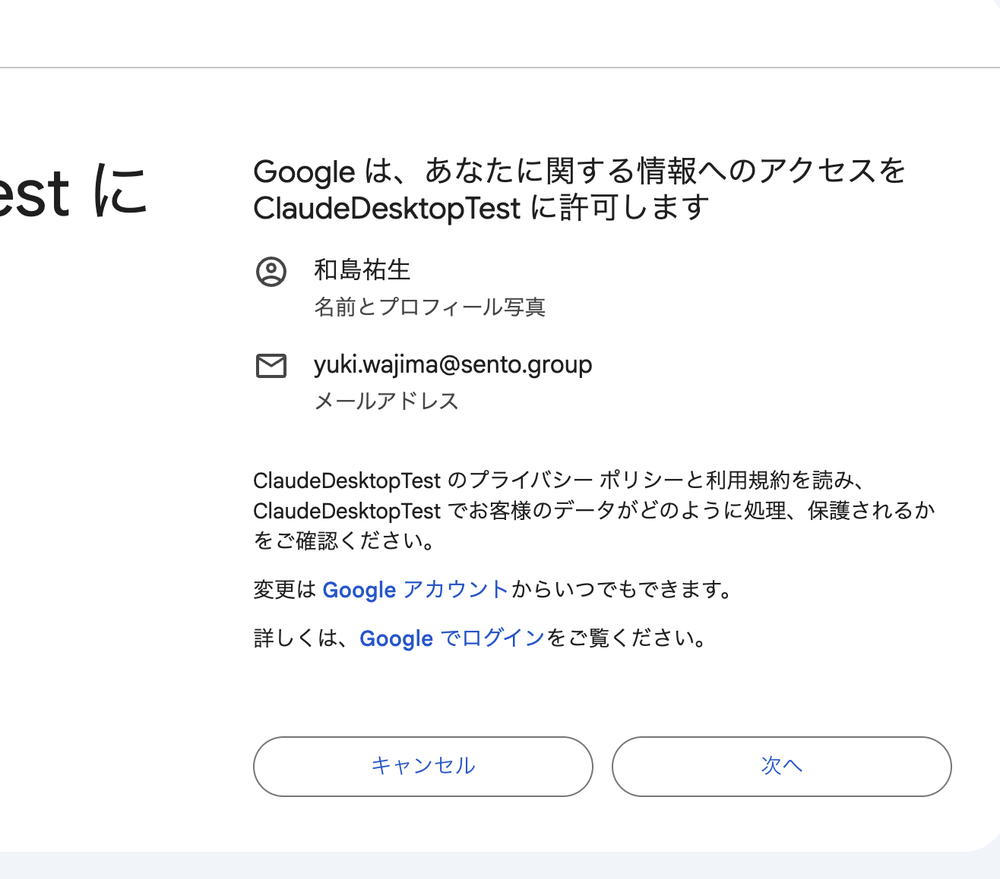
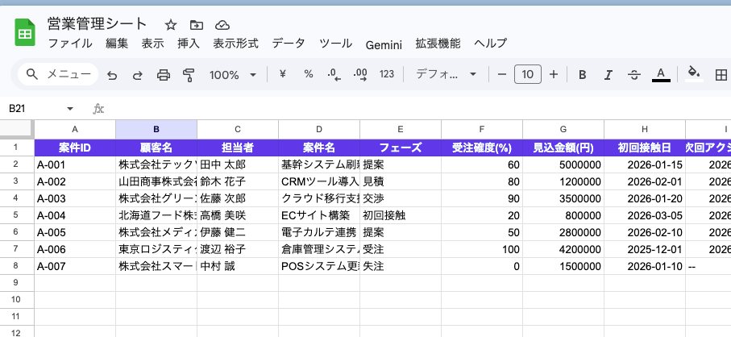

合宿の全体像
最初に全体を把握する。どのツールが・なぜ・どの順でつながるか。
ツール連携の全体像
この合宿で作る「分身OS」の構成
2日間の流れ
合宿スケジュール概要 → 詳細は スケジュールページ
合宿スケジュール詳細 →
何時に何をするか、10分発表のフォーマットまで確認できます。
IPOAフレームワーク →
「なにを作るか」の前に、どのActionを起こしたいかを定義します。
便利なリポジトリ一覧 →
合宿で参考になるGitHubリポジトリを用途別に整理しています。
なぜ分身OSを作るのか
AIを「便利な質問箱」から「仕事を任せる相手」に変える。
あのね、みなさんAIを使ってるじゃないですか。ChatGPTに聞く。Claudeに聞く。資料を作らせる。メール文を直させる。それ自体はもう珍しくないんですよ。
でも、たぶん同時にこういう感覚もあると思ってて。毎回、説明してませんか。「うちの会社はこうで」「このお客さんはこうで」「僕はこういう判断をしたくて」「この表現はうちっぽくないからやめて」。
社員を雇ったとして、毎朝その人に「うちの会社は何をしている会社です」から説明し直してたら、仕事にならない。でもAIにはそれをやっている。この「再説明コスト」をゼロにする。それが今日と明日でやることです。
さらに一歩先の話をすると、1人のAIに全部やらせるより、役割分担したAIチームに任せる方が質が上がります。文章を書くAI、それをレビューするAI、タスクを割り振るAI——それぞれが専門領域を持ったチームとして動く。この合宿の最終地点は、あなたがそのAI組織のCEOになることです。
目指す状態：単体AI vs AI社員チーム
Before
AIに毎回背景を説明し、出てきたものを場当たり的に直す。再説明コストが積み上がる。
After
引き継ぎ書（AGENTS.md群）を渡したAIチームが、業務の文脈を読んで自律で動く。あなたはCEOとしてレビューと判断だけをする。
講義HTMLを見ながら、Claude/Codexと対話してAI組織を構築するガイドファイルが
journey/ フォルダにあります。「journey/README.md を読んで始めてください」と言えばCEOへの道が始まります。grill-me型プロンプトで業務を深掘りする
方針が未定でも大丈夫。AIに執拗にインタビューさせて、深層心理から言語化する。
grill-me を使った「分身OS」構築の入口
「自分の業務でAIに任せたい作業を書いてください」では浅くなる。本人もまだ因果を掘れていないからです。
そこで先に、AIに執拗にインタビューさせる。Matt Pocockが発表したgrill-meスキルはGitHub 10万スター超え（2026年5月現在）のバイラルスキル。合宿の最初の道具として使います。
この件のあらゆる側面について執拗にインタビューして。共通理解に達するまで、デザインの因果関係と決定事項間の依存関係を1つずつ解決し、各質問に推奨回答も提示して。
Macユーザ辞書に登録
- システム設定を開く。
- キーボード → テキスト入力 → ユーザ辞書を開く。
- 入力に
ぐりる、変換に上のプロンプトを登録する。
Google日本語入力に登録
- メニューバーのGoogle日本語入力アイコンから「辞書ツール」を開く。
- 新規エントリーで、よみに
ぐりる、単語にプロンプトを入れる。 - 品詞は短縮よみ、または名詞でよい。
今のインタビュー結果を、次の3つに分けて整理してください。 1. AGENTS.mdに入れるべき恒久ルール 2. state.mdに入れるべき現在の重点テーマ 3. memory.mdに入れるべき長期的な会社情報・判断軸 そのうえで、初回の実務タスクとして一番筋が良いものを1つ選んでください。
IPOAで「なにをやりたい」の手前を定義する
Outputから始めず、Actionから逆算して必要なInputを決める。
IPOAは Action から逆算する
弱い入口
「BIを作りたい」「ダッシュボードがほしい」。これはOutput名だけで、行動が決まっていない。
強い入口
「毎週月曜に赤字見込み案件を3件選び、担当者に次の一手を決めさせたい」。Actionがあるので必要なOutputが決まる。
この業務について、IPOAで深掘りしてください。 順番: 1. Action: 誰が、いつ、何を決める・動くべきか 2. Output: そのActionに必要な見える成果物は何か 3. Input: 判断材料として何の情報が必要か 4. Process: Inputをどう整理・分析・変換すればOutputになるか 各質問に対して、私が答えやすい推奨回答も提示してください。 最後に ipoa.md と work-improvement.html に変換できる形で整理してください。
Claude CodeからCodexへ引っ越す
すでにClaude Codeを使っている人は、育てた資産を捨てずに移す。
Claude Codeを使っていた人が最初に聞くのは「今まで作ったものはどうなるんですか？」です。答えは、捨てない。移します。
引っ越しの考え方
CLAUDE.md / skills / logs
残す / 直す / 捨てる
AGENTS.md / skills / logs
このフォルダにはClaude Codeで使っていた設定やSkillがあります。 Codexへ引っ越す前提で、次を実行してください。 1. CLAUDE.md / AGENTS.md / skills / scripts / logs の有無を確認 2. Codexでも使うべきルールを抽出 3. Claude専用で書き換えが必要な部分を抽出 4. 公開してはいけない情報が混ざっていないか確認 5. Codex用AGENTS.mdの追記案を作成 まだファイルは変更せず、まず移行計画だけ出してください。
AGENTS.md / memory.md / state.md を作る
Codexに毎回読ませる業務引き継ぎ書を作る。
3ファイルの役割分担
文脈エンジンとして設計する
AGENTS.mdは「AIが最初に読む目次ファイル」として設計します。全部を詰め込まず、詳細情報は別ファイルに置いて必要な時だけ呼ぶ。これが Progressive Disclosure（段階的開示）の実践です。
| ファイル | 内容 | なぜ分けるか | 読むタイミング |
|---|---|---|---|
AGENTS.md | 目次・基本方針・安全ルール | 毎回読む定数。短くキープ | 常時 |
memory.md | 会社情報・顧客情報・長期知識 | 業務依存で変わりにくい | 業務開始時 |
state.md | 今の重点テーマ・ブロッカー | 週次で変わる変数 | タスク開始前 |
contexts/brand-voice.md | 口調・文体・NGワード | ライティング時だけ読む | 文章生成時 |
contexts/philosophy.md | 価値観・判断軸・MVV | 重要判断時だけ読む | 意思決定時 |
このフォルダに、私専用のCodex分身OSの最小構成を作ってください。 作るファイル: 1. AGENTS.md（目次 + 基本方針 + 安全ルール） 2. memory.md（会社情報 + 長期知識） 3. state.md（今の重点テーマ） 4. contexts/brand-voice.md（口調・文体・NGワード） 5. contexts/philosophy.md（価値観・判断軸） 6. logs/YYYY-MM-DD.md 前提: - 日本語で使う - AGENTS.mdは目次として短くキープ。詳細は各ファイルに分散 - brand-voice.mdは文章を書く時だけ読む - philosophy.mdは重要判断の時だけ読む まず空欄付きテンプレートとして作ってください。
# AGENTS.md — 私のCodex運用ルール ## 基本方針 あなたは私の仕事を支援するAIエージェント。 目的は単発の回答ではなく、私の会社の仕事を前に進めること。 ## 返答方針 - 前置きは短く、答えから入る - 不明点は調べてから返す - 判断が必要なときは筋良 / 筋悪を出す - 成果物は「次に何をするか」まで落とす ## 判断軸 1. 顧客に価値が出るか 2. すぐ実行できるか 3. チームの手間が減るか 4. 将来の変更コストが低いか 5. 今完璧である必要があるか ## 安全ルール - APIキー、パスワード、個人情報を外部に出さない - メール送信、Slack投稿、SNS投稿は実行前に確認する - ファイル削除、大量変更、上書きは実行前に確認する - わからないことを断定しない。必要なら調べる ## 継続改善 同じミスを2回したらAGENTS.mdにルールを追加する。 同じ作業を3回やったらテンプレート化またはSkill化を検討する。
上のAGENTS.md例を参考に、このフォルダの私用AGENTS.mdを作ってください。 必ずやること: 1. 私のIPOA、業務の目的、判断軸、安全ルールを空欄付きで入れる 2. 「毎回説明しなくてよい前提」と「今だけの状態」を分ける 3. APIキーや個人情報を入れない 4. 作成後、どこが仮置きで、どこを私が埋めるべきかを教える まだ勝手に外部サービスへ送信しないでください。
このフォルダのAGENTS.md、memory.md、state.mdを読んでください。 私の会社・役割・判断軸・あなたが手伝える仕事を要約してください。 ズレていそうなところがあれば、質問ではなく「仮説」として出してください。
Context7 / GitHub / Exa をMCPで取り込む
Codexのチャットから、外部の手と目を増やす。
MCPは「Codexに目と手を増やす仕組み」です。Context7は最新ドキュメントを見る目。GitHubはリポジトリやIssueを見る目。ExaはWebやX由来の情報を探す目。Chrome DevToolsは作った画面を検証する目。これがないと、Codexは古い知識と手元ファイルだけで判断しがちです。
MCPが増やす「目と手」


あなたはセットアップ担当です。以下を順に実行してください。 1. node / npx / uv / mcp-proxy が使えるか確認。不足があれば Homebrew 等で導入方法を提案し、実行前に私に確認してください。 2. ~/.codex/config.toml を次の内容で作成または更新してください。既存設定があれば破壊せずマージしてください。 3. YOUR_CONTEXT7_API_KEY / YOUR_EXA_API_KEY / YOUR_GITHUB_TOKEN はプレースホルダのまま書いてください。 4. 完了したら /mcp で確認する手順を教えてください。 --- config.toml 本文 --- model = "gpt-5-codex" model_reasoning_effort = "medium" [features] web_search_request = true [mcp_servers.context7] command = "npx" args = ["-y", "@upstash/context7-mcp", "--api-key", "YOUR_CONTEXT7_API_KEY"] [mcp_servers.github] command = "mcp-proxy" args = ["--transport", "streamablehttp", "-H", "Authorization", "Bearer YOUR_GITHUB_TOKEN", "https://api.githubcopilot.com/mcp/"] [mcp_servers.exa] command = "npx" args = ["-y", "mcp-remote", "https://mcp.exa.ai/mcp?exaApiKey=YOUR_EXA_API_KEY"] [mcp_servers.chrome-devtools] command = "npx" args = ["chrome-devtools-mcp@latest"]
~/.codex/config.toml のプレースホルダを置き換える。/mcp を実行し、接続状態を見る。~/.codex/config.toml のMCP設定を更新してください。 置き換える値: - YOUR_CONTEXT7_API_KEY → 私が今貼るContext7キー - YOUR_EXA_API_KEY → 私が今貼るExaキー - YOUR_GITHUB_TOKEN → 私が今貼るGitHub Token 条件: - キーを画面や公開ファイルに表示しない - 既存設定を壊さずマージする - 更新後に /mcp で確認する手順を教える まず、貼り付けるキーを1つずつ聞いてください。
| MCP | 役割 | 使いどころ |
|---|---|---|
| Context7 | ライブラリ最新ドキュメント参照 | GAS / Vercel / フレームワーク調査 |
| GitHub | Issue / PR / repo情報 | 便利リポジトリ取り込み |
| Exa | Web・コード検索 | X投稿や記事の裏取り |
| Chrome DevTools | ブラウザ確認 | HTMLサイトやGASアプリの検証 |
agmsgでClaude CodeとCodexをつなぐ
Claudeで計画し、Codexで実装する往復を、口頭説明なしで渡せるようにする。
Claudeで計画 → Codexで実行 → Claudeでレビュー
チーム名とエージェント名は自分で決めます。例: teamは ai-camp、Claude側は claude-planner、Codex側は codex-builder。
~/.agents/skills/agmsg/scripts/join.sh <team> <name> claude-code "$(pwd)"
~/.agents/skills/agmsg/scripts/join.sh <team> <name> codex "$(pwd)"
/agmsg
/agmsg send <agent> "<msg>"
/agmsg team
長いプロンプトをSkill化して使う
毎回コピペする依頼を、短い呼び出しに変える。
長いプロンプトは教材には載せます。でも実務で毎回人間が打つものではないです。大事なのは「良い依頼文を覚えること」ではなく「良い依頼文をSkillとして保存し、短く呼ぶこと」です。
Skill化の流れ
このフォルダに skills/repo-intake/SKILL.md を作ってください。 目的: GitHubリポジトリのURLを渡されたら、私の業務環境に取り込むべきか判断する。 必ず守ること: - AGENTS.mdを読んでから判断する - いきなりインストールしない - 導入 / 保留 / 見送りのどれかで結論を出す - 必要なAPIキー、料金、セキュリティリスクを書く - 今日10分で試す最小手順を書く 出力: 1. 何をするリポジトリか 2. 私の業務に使える場面 3. 導入する場合の手順 4. 必要なAPIキー・アカウント・料金 5. セキュリティ/保守リスク 6. 類似ツールが既に環境にあるか 7. 結論: 導入する / 保留 / 見送り 8. 今日試すなら最小の一手
このフォルダに skills/source-intake/SKILL.md を作ってください。 目的: X投稿、記事、動画、GitHub URLを渡されたら、自分のCodex環境に取り込む価値があるか判断する。 出力形式: ## 主張 投稿者は何を言っているか ## 使える部分 私の仕事・Codex環境に取り込めるところ ## 危ない部分 誇張、再現性の低さ、セキュリティリスク、前提違い ## 反映先 - AGENTS.mdに追記するなら何か - memory.mdに残すなら何か - Skill化するなら何か - 今は見送るなら理由 ## 次の一手 今日10分で試せることを1つ 注意: URLを貼られただけで実行せず、まず導入判断を出す。
repo-intakeスキルを使って、このリポジトリを導入判断してください。 URL: https://github.com/openclaw/gogcli 結論が「導入する」の場合だけ、次に最小インストール手順を出してください。
Asana PATを取得してタスク登録できるようにする
CodexからAsana APIへ接続し、タスク作成を依頼できる入口を作る。
- Asana でアカウントを作成する。
- 右上プロフィール → My Settings → Apps → Manage Developer Apps を開く。
- Developer Apps で Create new token を押す。
- 名前を入力し、規約に同意して Create。
- 表示されたPATをコピーする。表示は1回だけです。
Authorization: Bearer <PAT> として使います。実値を公開ページ、チャットログ、GitHubに載せないでください。このPATでAsana APIに接続し、〇〇プロジェクトにタスクを5件登録してください。PATは YOUR_ASANA_PAT として扱い、公開ファイルには書かないでください。
gogcliでGoogle Sheetsを作成・操作する
Codexに「スプレッドシートを作って」と頼めるようにする。
CodexからSheetsを触る構造
自然言語で依頼
ターミナルでgogを実行
スプレッドシート作成・読み書き

brew install openclaw/tap/gogcli
gog --version






gog auth credentials set ~/Downloads/client_secret_....json
gog auth add you@gmail.com --services drive,sheets,docs,calendar
gog auth doctor --check
gog CLIでGoogle Sheetsに接続できる前提で進めてください。 「社内アプリ用データ」という新規スプレッドシートを作成し、次の列を持つシートを作ってください。 - title - owner - status - priority - url - memo サンプルデータを5件入れて、作成したスプレッドシートURLを教えてください。
GASで簡単な社内アプリを作る
スプレッドシートをデータベースにして、HTMLの社内ポータルを公開する。
- 対象スプレッドシートを開く。
- 拡張機能 → Apps Scriptを開く。
Code.gsに下のコードを貼る。- HTMLファイル
indexを追加し、下のHTMLを貼る。 - デプロイ → 新しいデプロイ → ウェブアプリ。
- 実行ユーザーは自分、アクセス範囲は用途に合わせる。合宿では「リンクを知っている全員」または「自分のみ」で試す。
function doGet() {
return HtmlService.createHtmlOutputFromFile('index')
.setTitle('社内アプリ')
.setXFrameOptionsMode(HtmlService.XFrameOptionsMode.ALLOWALL);
}
function getItems() {
const sheet = SpreadsheetApp.getActiveSpreadsheet().getSheets()[0];
const values = sheet.getDataRange().getValues();
const headers = values.shift();
return values.map(row => {
const item = {};
headers.forEach((header, index) => item[header] = row[index]);
return item;
});
}
<!DOCTYPE html>
<html>
<head>
<base target="_top">
<style>
body { font-family: system-ui, sans-serif; margin: 24px; background: #f7f8f7; color: #17211d; }
h1 { margin-bottom: 16px; }
.grid { display: grid; grid-template-columns: repeat(auto-fit, minmax(220px, 1fr)); gap: 12px; }
.card { background: white; border: 1px solid #dce4df; border-radius: 8px; padding: 14px; }
.meta { color: #66736e; font-size: 13px; }
</style>
</head>
<body>
<h1>社内アプリ</h1>
<div id="app">読み込み中...</div>
<script>
google.script.run.withSuccessHandler(items => {
document.getElementById('app').innerHTML = '<div class="grid">' + items.map(item => `
<div class="card">
<h2>${item.title || ''}</h2>
<p class="meta">担当: ${item.owner || ''} / 状態: ${item.status || ''}</p>
<p>${item.memo || ''}</p>
</div>
`).join('') + '</div>';
}).getItems();
</script>
</body>
</html>
NotebookLM-pyで資料置き場と連動する
重い資料を毎回Codexに貼らず、NotebookLMに置いて呼び出す。
分身OSが育つほど、資料が増えます。すべてを毎回Codexに貼ると重い。NotebookLM-pyを使うと、資料はNotebookLMに置き、Codexから「この資料群を見て」と頼めるようになります。
pip install "notebooklm-py[browser]"
playwright install chromium
notebooklm login
notebooklm auth check --test --json
notebooklm create "AI合宿 資料置き場"
notebooklm use <notebook_id>
notebooklm source add ./AGENTS.md
notebooklm source add ./outputs/lecture-notes.pdf
notebooklm ask "この資料群から、受講者が詰まりそうな点を5つ出して"
notebooklm skill install
notebooklm skill status
Vercelアカウント作成からHTMLサイト公開まで
GitHubに置いたHTMLを、URLで共有できる状態にする。
GitHub push → Vercel 自動デプロイの流れ
python3 -m http.server 8000
git status
git add .
git commit -m "Add Codex bunshin OS lecture site"
git push origin main
ngrokで一時公開し、会社方針HTMLを見せる
Vercelに出す前に、手元のHTMLを一時URLで共有して確認する。
HTMLは、AIが作ったものを人間がすぐ見て直せる形式です。PDFやスライドより修正が軽く、GitHub/Vercel/ngrokにそのままつながる。会社方針、手順書、社内アプリの初版は、まずHTMLで出すと確認が速いです。
Vercelとngrokの使い分け
brew install --cask ngrok
ngrok config add-authtoken YOUR_NGROK_TOKEN
python3 -m http.server 8000
ngrok http 8000
このフォルダに company-policy.html を作ってください。 目的: 社内向けに、会社方針・判断軸・やらないことを1ページで確認できるHTMLにする。 条件: - 白背景で読みやすくする - 見出しは「会社方針」「判断軸」「やらないこと」「今日からの行動」に分ける - 私のAGENTS.mdとmemory.mdがあれば読み込む - 個人情報やAPIキーは載せない 作成後、python3 -m http.server 8000 で見られる前提で確認手順も出してください。
Macを起動維持してCodexを走らせる
長い作業を任せるときは、Macが寝ない状態を作る。
caffeinate -dimsu -t 21600
-d: ディスプレイをスリープさせにくくする。-i: システムスリープを防ぐ。-m: ディスクスリープを防ぐ。-s: AC電源接続時のスリープを防ぐ。-u: ユーザー操作があった扱いにする。-t 21600: 21600秒、つまり6時間。
継続アップデート: 失敗ログ、AGENTS追記、Skill化
分身OSは作って終わりではなく、使うたびに育てる。
分身OSの継続改善サイクル
「明日10時にどの業務改善HTMLを見せるか」を声に出す。内容は問わない。Actionが定義されていることを優先。翌日10:00に各自10分で発表。
運用ルール：AIに与える権限の境界
AIには「常識」が通じません。「ファイルを勝手に消してはいけない」ことも、明文化されていなければ判断できません。AGENTS.mdに「やっていいこと / 要確認 / 絶対禁止」を書く。これが自律運用の前提です。
| 自律実行OK（確認不要） | 要確認（実行前に聞く） | 絶対禁止 |
|---|---|---|
| ファイルの作成・編集 コードの生成・修正 テストの実行 Asanaのステータス更新 |
ファイルの削除 外部サービスへのPOST GitHubへのpush メール・Slack送信 |
[自分で決める] 例：本番DBへの書き込み 例：お客さんへの直接連絡 例：金銭に関わる操作 |
AGENTS.mdに「権限境界テーブル」を追記してください。 私の回答： - 自律実行OKにしたいもの: [ここに書く] - 要確認にしたいもの: [ここに書く] - 絶対禁止にしたいもの: [ここに書く] 表形式でAGENTS.mdに追記してください。追記前に提案を出してから実行してください。
週次メンテナンス：AI組織の定期整備
使うほど AGENTS.md に情報が増え、重複や古い情報が溜まります。週に1回、強力なモデルに「大掃除」を依頼する習慣が、AI組織を崩壊させずに育てるコツです。
週次メンテナンスをお願いします。 AGENTS.md / memory.md / state.md / contexts/ / skills/ を全部読んでください。 以下を提案してください（実行前に確認します）： 1. AGENTS.mdの重複ルールを統合する 2. memory.mdから古くなった情報を外す 3. state.mdを今週の状況に更新する 4. 使っていないSkillがあれば棚卸しを提案する 最後に、「次回からAGENTS.mdに追記すべきルール」を1〜3つ提案してください。 変更前に必ず提案を出してから、OKをもらって実行してください。
今回の作業を振り返って、次回からCodexがより良く動くようにするには何を更新すべきですか。 候補: - AGENTS.md - memory.md - state.md - logs/YYYY-MM-DD.md - 新しいテンプレート - 新しいSkill 更新が必要なものだけ提案し、必要なら実際に更新してください。
この作業は繰り返し発生しています。 テンプレート化またはSkill化すべきか判断してください。 判断軸: 1. 月1回以上使うか 2. 毎回同じ判断が必要か 3. 出力形式が固定できるか 4. 失敗しやすい注意点があるか 5. 他の人にも使えるか 結論: - テンプレートで十分 - Skill化する - まだ早い
合宿完走チェック
このHTMLで操作方法を見ながら、Claude/Codexに
journey/README.md を読んで始めてください と言うと対話型でAI組織が構築できます。Session01〜04 を通じて「AI組織のCEO」になるまでを段階的に導きます。エージェントを作ってみる
grill-meで業務を整理して、そのままエージェント設計につなげる。
「エージェントを作りたいけど、どんなエージェントを作るか決まらない」「業務棚卸しに時間がかかる」はよくある詰まりです。これ、grill-meでショートカットできます。
インタビューで出てきた業務の骨格をそのまま概要.mdにし、それをエージェント設計の入力にする。最初のドミノを正しく置けば、連鎖します。
grill-me → エージェント設計 の連鎖フロー
Claude Code Sub-agentsで作る
Claude Codeには「Sub-agents（Swarms）」機能があり、タスクを複数のエージェントに並列で分担させられます。
Sub-agent の特徴
リーダーエージェントが計画を立て、複数の子エージェントに並列で委任。コードを書く・調査する・検証するを同時進行できる。
Swarm の特徴
専門化したエージェントチームを生成。依存関係付きのタスクボードを共有し、並行作業して統合する。
今のインタビュー結果を「概要.md」として保存してください。 含める内容: 1. 業務の目的と背景 2. 主要な作業フロー（3〜5ステップ） 3. よくある詰まりとその原因 4. AIに任せたい作業トップ3 5. 判断が必要なポイント このファイルを次のエージェント設計の入力として使います。
概要.mdを読んで、私の業務に合ったSub-agentを1つ設計してください。 出力形式: 1. エージェント名と役割（1行） 2. このエージェントがやること（3〜5項目） 3. AGENTS.mdに追記すべきルール 4. 試す最小タスク（今日10分でできるもの） まず設計案を出してから、OKなら実装に進んでください。
agent-browserで公開URLをAIに読ませる
作ったHTMLをAI自身に開かせ、現在地と改善点を画面ベースで確認する。
公開URLをAIに読ませる流れ
npm install -g agent-browser
agent-browser install
brew install agent-browser
agent-browser open https://aigassyuku06.vercel.app/
agent-browser snapshot -i
agent-browser click @e1
agent-browser snapshot -i --json
agent-browserで https://aigassyuku06.vercel.app/ を開き、snapshotを取得してください。 受講者が今どこにいるか分かるか、次に押すものが分かるか、本文が詰まりすぎていないかを確認し、index.htmlの改善案を出してください。 実装前に変更方針だけ出してください。